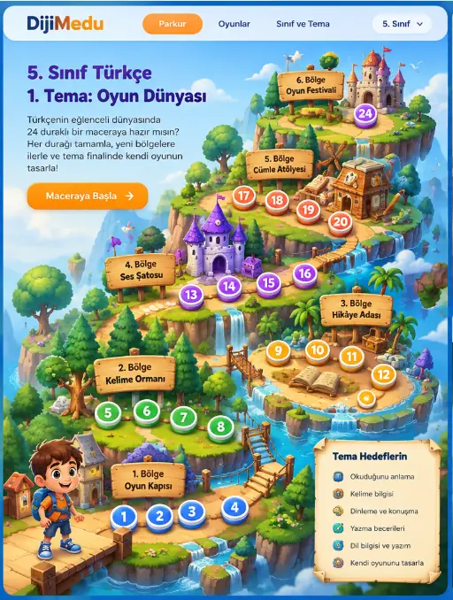

5. Sınıf Türkçe
1. Tema: Oyun Dünyası
Türkçenin eğlenceli dünyasında
24 duraklı bir maceraya hazır mısın?
Her durağı tamamla, yeni bölgelere
ilerle ve tema finalinde kendi oyununu
tasarla!
Tema Hedeflerin
📘 Okuduğunu anlama
🧩 Kelime bilgisi
🎧 Dinleme ve konuşma
🌍 Yazma becerileri
📝 Dil bilgisi ve yazım
🏆 Kendi oyununu tasarla
Üyelik gerekmez. İlerlemen yalnızca bu cihazda saklanır.